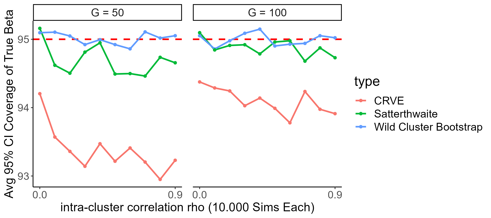
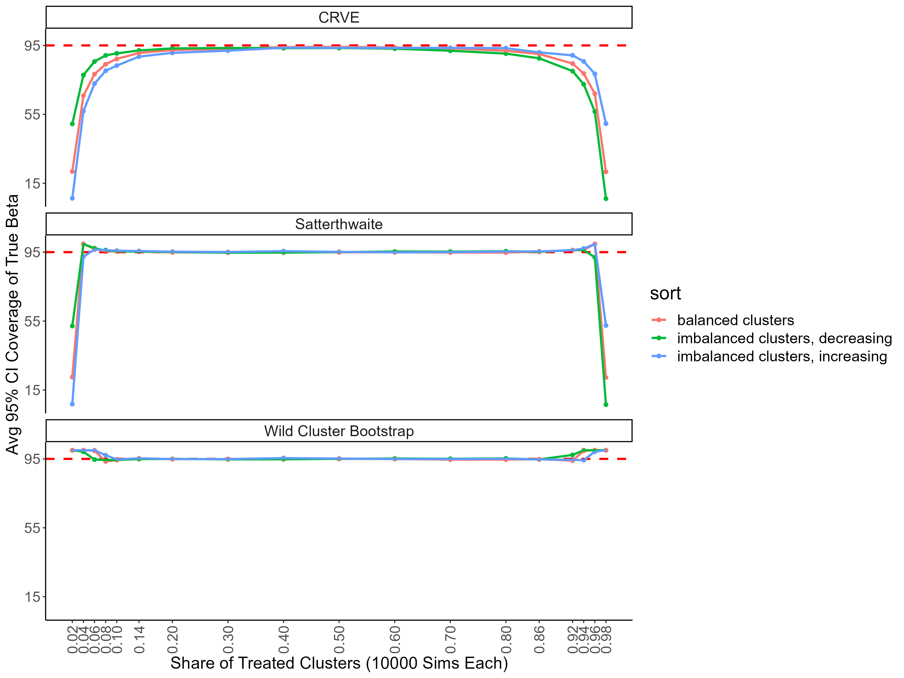

# install.packages("devtools")
devtools::install_github("s3alfisc/clusteredErrorsSims")A 🐴 race: The Wild Cluster Bootstrap vs Satterthwaite-corrected Sandwich Estimators when the number of Clusters is small
statistical inference
wild cluster bootstrap
clustered errors
Satterthwaite correction
A couple of months ago, Gordon Burtch shared an excellent Twitter thread on the merits of wild cluster bootstrap inference when the regression error terms are clustered into a small group of clusters:
In his simulation study, Gordon compared the performance of the wild cluster bootstrap with regular sandwich cluster robust variance estimators (CRVE). As I am quite invested in the wild cluster bootstrap, I was happy to see that it appeared to outperform ‘classical’ robust standard errors: in his simulations, the coverage rate of wild clustered bootstrapped confidence intervals is already close to the desired coverage rate of 95% even for a small number of clusters (e.g. 5-10).
Nevertheless, there is a statistical literature that argues that it is fine to use cluster robust sandwich estimators to compute standard errors for a small number of clusters as long as one applies an appropriate small sample correction via Satterthwaite or saddlepoint corrections (Imbens & Kolesar, Bell, Tipton & Pustejovksy). All these methods are implemented in R via the clubSandwich package and in Stata in the clubSandwich-Stata package.
Of course I was curious to see how the Satterthwaite-corrected SEs would perform in comparison to the would cluster bootstrap, so I decided to run some simulations.
Luckily for me, Gordon published all of his code on github, so it was easy for me to slightly tweak it and add simulations for Satterthwaite corrections. Open software is really awesome!
I have collected my minor updates of Gordon’s code in an R package, which is available on github. To reproduce all analyses below, you simply have to install the package by running
But before we dive into the simulations, I will start with revising some theory on the consistency of CRVE that will motivate the design of the simulations.
When are clustered standard errors biased?
In general, cluster robust variance estimators might be biased if one of the three conditions below holds:
- If there are only very few clusters.
- If the cluster sizes are wildly different.
- If the intra-cluster correlations varies across clusters.
In the following simulations, I will focus on cases 1-2 and conduct three simulation studies. The first simulation closely follows Gordon’s work and investigates the performances of different inference methods for a small number of clusters G, but includes simulations for Satterthwaite corrected CRVE estimates via the clubSandwich package. The second set of simulations investigates the performance for clustered errors with \(G \in \{50, 100\}\) clusters, but wildly different cluster sizes. Last, I take a look at a special case that has received considerable attention: how do wild cluster bootstrap and Satterthwaite corrected SEs perform when only few clusters are treated (as often happens with Difference-in-Differences identification strategies)? Simulations 2 and 3 are heavily influenced by work by MacKinnon & Webb on the performance of the wild cluster bootstrap under “wildly different” cluster sizes.
The data generating process for all simulations is a simple linear regression model for \(g = 1, ..., G\) clusters:
\[ y_{ig} = \beta_0 + \beta_1 X_{ig} + \epsilon_{ig} \]
where \(E(\epsilon_{ig}|X_{ig}) = 0\), \(\beta_0 = 1\), \(\beta_1 = 0.5\) and the errors \(\epsilon_{ig}\) are simulated to be correlated within \(G\) clusters with intra-cluster correlation \(\rho\). All errors are uncorrelated across clusters.
So the stage is set for a 🐴 race! My champion, of course, is the wild cluster bootstrap, but let’s see how the bias-corrected standard errors perform in comparison!

Simulation 1: Small number of clusters G & balanced cluster sizes
To initiate the horse race, you simply have to run the sim_balanced_clusters() function, though I want to note that on my laptop, this takes around 2h while using multiple cores. By default, the wild cluster bootstrap will run with \(B = 9999\) bootstrap iterations throughout all simulations.
library(clusteredErrorsSims)
set.seed(1234)
sim_balanced_clusters(n = 1000, n_sims = 1000, rho = 0.7, workers = 4)Here are the results for the first simulation:

There are three takeaways from figure 2:
As expected, inference with non-robust standard errors is severely biased.
For less than 50 clusters, the coverage rate for the CRVE based confidence intervals is always lower than 95%: inference based on uncorrected CRVEs underestimate the variability of the parameter of interest, \(\beta_1\).
The wild cluster bootstrap and cluster robust variance estimator with Satterthwaite correction perform astonishingly well for 3 or more clusters. For a number of cluster with of \(3 \leq G \leq 10\), the Satterthwaite correction seems to perform slightly better than the wild cluster bootstrap.
Simulation 2: Wildly different cluster sizes
Instead of simulating balanced cluster sizes, I now follow MacKinnon & Webb and simulate group sizes that mimic the relative size of the US states (minus Washington DC) for \(G=50\) and \(G = 100\) clusters. The dgp is unchanged, but in parallel to MacKinnon & Webb’s work, I set the number of observations \(N\) to \(2.000\). I also increase the number of Monte Carlo simulations to n_sim = 10.000 and repeat the analysis for a range of intra-cluster correlations \(\rho\).

Both for \(G = 50\) and \(G = 100\), the wild cluster bootstrap and Satterthwaite corrected errors perform equally well and achieve close to 95% coverage for all intra-cluster correlations \(\rho\). The unadjusted CRVEs instead only achieve coverage rates of around 93 and 94%.
You can reproduce Figure 2 by running
wildly_different_sim(n = 2000, n_sims = 5000, workers = 4)Once again, note that this function will run for a very long time.
Treatment Effects
The last simulation investigates a topic that has received considerable attention: regression models where the treatment occurs at the cluster level, but only few clusters are treated (e.g. “How much should we trust DiD estimates?”)? For the sake of simplicity, I do not simulate a “full” DiD model with 2-way fixed effects and potential error correlations across time but restrict myself to replacing \(X_{ig}\) in the model above by a treatment assignment dummy \(D_{ig}\) - the simulation hence mirrors a cluster randomized experiment. (Loosely) following MacKinnon & Webb once again, I then simulate \(N=2000\) observations with intra-cluster correlation \(\rho = 0.5\) and vary the number of clusters that are treated. The simulations are repeated for different proportions of treated clusters \(P \in \{1/50, ..., 1\}\), where the clusters are a) of equal size, b) US-state sized and sorted in increasing order and c) US-state sized and sorted in decreasing order.
treatment_effect_sim(n = 2000, n_sims = 10000, workers = 4)
Once again, both the wild cluster bootstrap and Satterthwaite correction perform well for a wide range of treated clusters. For more extreme shares of treated clusters, the wild cluster bootstrap’s coverage rate approaches 1, while the Satterthwaite corrected CRVE’s coverage rate is as low as the regular CRVE’s, whose coverage rate starts to deviate from the desired coverage level of 95% already at less extreme shares of treated clusters than both bootstrap and Satterthwaite correction.
Conclusion
So, when should you use Satterthwaite corrected cluster robust standard errors, and when should you rely on the wild cluster bootstrap in case you are facing a small number of clusters problem or data with wildly different cluster sizes? The honest answer is that I still don’t know.1 All in all, my main learning from the simulations above is that the Satterthwaite correction method might perform just as well as the wild cluster bootstrap. I am quite impressed by the performance of the Satterthwaite corrected cluster robust sandwich estimator!
Code
You can find all code to reproduce the analyses above in this github repo. It’s essentially a clone of code written by Gord Burtch - my estimate for a lower bound of the share of Gordon’s code is 80%. You can find his code here.
Literature
- Bell & McCaffrey - “Bias reduction in standard errors for linear regression with multi-stage samples”, Survey Methodology (2002)
- Cameron, Gelbach & Miller - “Bootstrap-based improvements for inference with clustered errors”, Review of Economics & Statistics (2008)
- Imbens & Kolesar - “Robust standard errors in small samples: Some practical advice”, Review of Economics and Statistics (2016)
- MacKinnon & Webb - “Wild bootstrap inference for wildly different cluster sizes”, Journal of Applied Econometrics (2017)
- Pustejovsky & Tipton - “Small-sample methods for cluster-robust variance estimation and hypothesis testing in fixed effects models”, Journal of Economics and Business Statistics (2018)
- Webb - “Reworking wild bootstrap based inference for clustered errors”, Working Paper (2013)
Footnotes
Note that MacKinnon and Webb conduct Monte Carlo studies on the WCB with several 100K iterations, so it might be necessary to increase the number of iterations to make more definite statements.↩︎